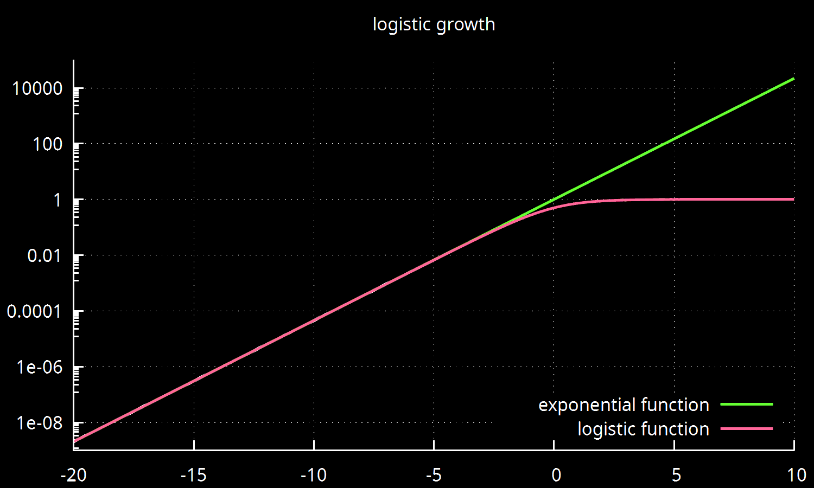

link to this page
Development history of the solar system

Ever since the industrial revolution, humanity had roughly followed a trend of exponential growth, which forced it to expand and advance to accommodate the ever growing population.
In terms of solid numbers I am following this document at least until I make a new estimate that I feel is more grounded.
- Numerical Milestones
- 1980 c.e. / 315 532 800 - Power use of human civilization passes 10 Terawatts, reaching 0.7 on the Kardashev-Sagan scale
- 2039 c.e. / 2 177 452 800 - human population reaches 10 billion
- 2092 c.e. / 3 849 984 000 - human population reaches 20 billion
- 2093 c.e. / 3 881 606 400 - Power use of human civilization passes 100 Terawatts, reaching 0.8 on the Kardashev-Sagan scale
- 2137 c.e. / 5 270 054 400 - Life expectancy at birth is now rising by more than one year per year for the average human
- 2162 c.e. / 6 058 972 800 - human population reaches 50 billion
- 2198 c.e. / 7 195 046 400 - Power use of human civilization passes 1 Petawatt, reaching 0.9 on the Kardashev-Sagan scale
- 2215 c.e. / 7 731 417 600 - human population reaches 100 billion
- 2268 c.e. / 9 403 948 800 - human population reaches 200 billion
- 2302 c.e. / 10 476 864 000 - Power use of human civilization passes 10 Petawatts, reaching 1 on the Kardashev-Sagan scale
- 2338 c.e. / 11 612 937 600 - human population reaches 500 billion
- Mon, 17 Jun 2391 20:38:59 UTC / Epoch 13 299 971 939 - human population passes 1 trillion people
- 2444 c.e. / 14 958 000 000 - human population reaches 2 trillion
- 2514 c.e. / 17 166 988 800 - human population reaches 5 trillion
Events per Gigasecond epoch
Negative time
1969 c.e. / -14 159 025 - the first human footstep on Luna
Epoch 0 (years 1970 to 2001)
1970-01-01 00:00:00 UTC - Time zero in the unix epoch time
Internet is established - digital computers are allowed to communicate over vast distances and gradually become one of the most significant parts of civilization
Y2K incident - gregorian calendar crosses year 2000, causing many software systems to break because of optimizations that only stored two last digits of the year instead of the full year
The first instance of a human continuously spending a full year in space, achieved simultaneously by human astronauts Vladimir Titov and Musa Manarov.
1-gigasecond epoch (years 2001 to 2033)
CrowdStrike incident - at time 1 721 362 140 an update to a widely used piece of software is released with a single bug that causes approximately 8.5 million computers across Terra to crash and be unable to restart, resulting in global disruption and highlighting the severity of the human civilization's reliance on software
Brief burst of rapid advancements in the field of artificial intelligence - artificial intelligence is now capable of coming across as unmistakably human to humans, and producing fictitious content that humans cannot determine to be not real without advanced assistance
2-gigasecond epoch (years 2033 to 2065)
human population reaches 10 billion
First full year of uninterrupted human presence on the surface of Luna
The Epochalypse incident - Epoch Time reaches the highest value that can be stored in a 32-bit signed integer, which causes a small fraction of software that had not prepared for this to suffer errors or stop working entirely at the exact epoch time 2 147 483 647.
3-gigasecond epoch (years 2065 to 2096)
Lunar resources succesfully used to decrease cost for construction of orbital infrastructure around Terra
4-gigasecond epoch (years 2096 to 2128)
The Second Epochalypse incident - at exact time 4 294 967 296 a small number of software experiences errors or stops working entirely as the epoch time reaches the highest value that can be stored in an unsigned 32-bit integer.
Asteroid mining proof of concept success
5-gigasecond epoch (years 2128 to 2160)
Start of construction of "Island Three", the first O'Neill cylinder in terran orbit
Practical human lifespan asymptotically explodes towards infinity as the advances in medicine and biotechnology begin to extend the expected human lifetime by more than one year each year
First commercial asteroid mining operation starts to return profit by supplying orbital construction material
6-gigasecond epoch (years 2160 to 2191)
Numerous permanent asteroid mining settlements established
The first O'Neill cylinder construction finished and human inhabitation is succesful, causing numerous similar (and larger) projects to be started
7-gigasecond epoch (years 2191 to 2223)
human population grows past 100 billion
Numerous mining settlements set up in the asteroid belt
8-gigasecond epoch (years 2223 to 2255)
Full scale O'Neill cylinders constructed and inhabited in the asteroid belt for the first time
the number of operational O'Neill cylinders across the solar system grows past 1000
9-gigasecond epoch (years 2255 to 2286)
Reports become widely known that for a while by now certain AI models were already being successfully taught entirely new skills outside of their intended purposes for use in the asteroid mining industry, habitat construction and habitat management - the late realization causes a minor rush to specifically train new AI with greater capacity for skill acquisition
10-gigasecond epoch (years 2286 to 2318)
Humanity reaches kardashev-1 status
2302 c.e. / 9 467 107 200 - first release of UEIA, a free and open-source adaptable Artificial Mind
11-gigasecond epoch (years 2318 to 2350)
Civic-2 chip released as an open blueprint, reviving and reworking the long dead civic chip project
2350 c.e. - the last release of UEIA by the original developers
12-gigasecond epoch (years 2350 to 2381)
Civic-2 chip design finalized and work fully moved to Civic-3 chip development
A new methodology in creation of more powerful AI is demonstrated by creating composite minds from multiple generalist models
13-gigasecond epoch (years 2381 to 2413)
Human population grows past 1 trillion
Patricia Whateverweaver is born (under a different name)
First experimental success in human cognitive upscaling
Civic-3 chip design finalized and work fully moved to Civic-4 chip development
14-gigasecond epoch (years 2413 to 2455)
Whateverweaver's body released as an open source blueprint
Civic-5 chip development started in paralel with Civic-4, exploring different implementations of spintronic computing
Noca Bell hab 1 is opened
15-gigasecond epoch (years 2455 to 2477)
Civic-5 chip finalized
16-gigasecond epoch (years 2477 to 2508)
UEIA "convergent" variant developed and released
17-gigasecond epoch (years 2508 to 2540)
Civic-4 chip design finalized
18-gigasecond epoch (years 2540 to 2572)
Human population grows past 10 trillion
19-gigasecond epoch (years 2572 to 2603)
?
20-gigasecond epoch (years 2603 to 2635)
?
21-gigasecond epoch (years 2635 2667)
?
22-gigasecond epoch (years 2667 to 2698)
?
23-gigasecond epoch (years 2698 to 2730)
?
24-gigasecond epoch (years 2730 to 2762)
Human population grows past 100 trillion
25-gigasecond epoch (years 2762 to 2793)
?
26-gigasecond epoch (years 2793 to 2825)
?
27-gigasecond epoch (years 2825 to 2857)
?
28-gigasecond epoch (years 2857 to 2888)
?
29-gigasecond epoch (years 2888 to 2920)
Human population grows past 1 quadrillion
30-gigasecond epoch (years 2920 to 2952)
?
31-gigasecond epoch (years 2952 to 2984)
?
32-gigasecond epoch (years 2984 to 3015)
Gregorian calendar crosses year 3000